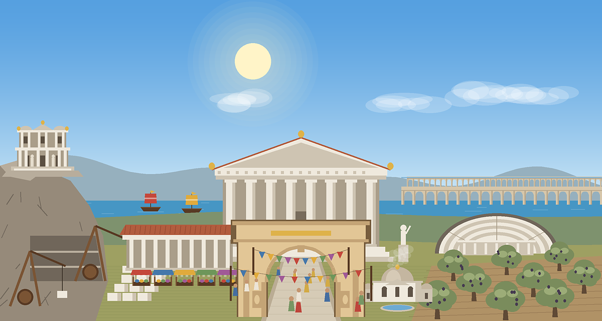
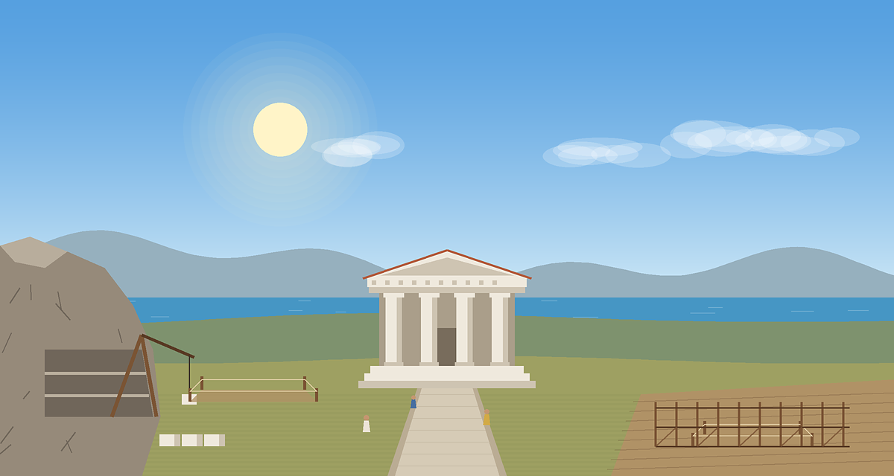
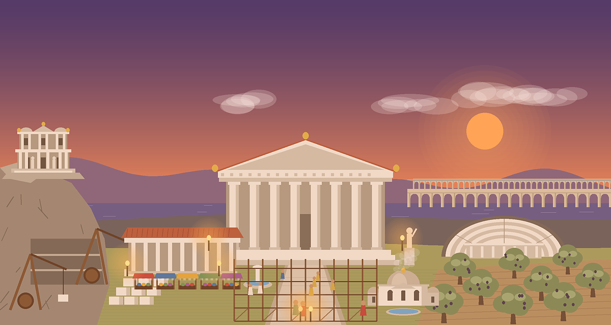
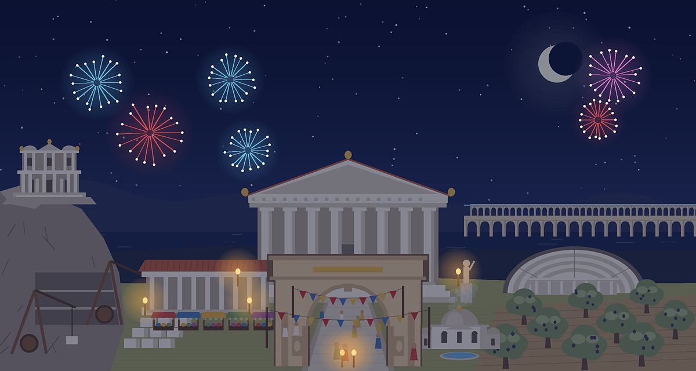
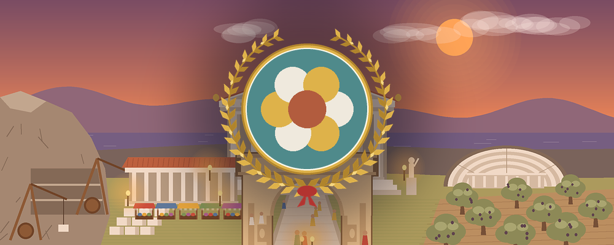

Discord sunucunu, üyelerin birlikte inşa ettiği yaşayan bir antik kente dönüştür.

Kimse ek bir şey yapmak zorunda değil: sunucunuz ne kadar canlıysa şehriniz o kadar hızlı büyür.
Mesajlar 🪨 Mermer, sesli kanallar 🫒 Zeytin, mini oyunlar 🪙 Sikke kazandırır. Hepsi şehrin ortak hazinesine gider.
Sıradaki binayı üyeler butonlarla oylar. Hazine dolunca inşaat kendiliğinden tamamlanır.
Her bina sunucuya yeni bir güç kazandırır ve şehrin resminde görünür. Her şehir birbirinden farklıdır.
Bir şehir oyunu, eğlenceli mini oyunlar ve ihtiyacınız olan sunucu araçları, tek botta.
/şehir yazın, şehrinizin resmini görün. Gökyüzü saatine göre değişir: şafak, gündüz, gün batımı, yıldızlı gece.
200'ü aşkın sorulu Bilgi Yarışması, hızlı parmaklar için Refleks ve Kütüphane'yle açılan Tarih Sırası. Amfitiyatro kurulunca kazananlar şehre Sikke kazandırır.
Her gün katkı veren kişi sayısı şehrin canlılığını belirler. Canlı şehirler daha hızlı üretir; sokakları kalabalıklaşır.
Misafirden Meclis Üyesi'ne altı unvan. İsterseniz her unvana bir Discord rolü bağlayın, Civita kendisi versin.
İsteyen şehirler prestijleriyle yarışır. Başka sunucularla kardeş şehir olun: canlı kardeşler üretime bonus katar, birbirinize kervan gönderirsiniz.
Yılbaşında havai fişekler, baharda çiçekler; özel günlerde şehir süslenir ve bonuslar gelir.
Yeni üyeler, sunucunuzun kendi şehrinin üzerinde defne çelengiyle karşılanır.
Uyarı, susturma, atma, yasaklama, mesaj temizleme, işlem kaydı, yeni üye doğrulama ve gizli alt başlıkta açılan destek talepleri. Hepsi Discord yetkilerine göre.
Bütün resimler Civita'nın kendisi tarafından, o anki şehre göre çizilir.




Komutlar herkesin kendi Discord dilinde görünür.
Evet. Civita'nın bütün özellikleri ücretsizdir.
Hayır. Civita mesajlarınızın içeriğini okumaz ve saklamaz; yalnızca "biri mesaj yazdı" bilgisini şehre kaynak kazandırmak için kullanır.
Türkçe ve İngilizce. Herkes Civita'yı kendi Discord dilinde görür; yöneticiler isterse sunucu için tek bir dil seçebilir.
Civita'yı sunucunuza ekleyin, /ayarlar duyuru ile bir duyuru kanalı seçin ve sohbete devam edin. Birkaç dakika içinde ilk Meclis oylaması gelir.
Hayır. Hoş geldin mesajı varsayılan olarak kapalıdır; moderasyon araçlarını kullanıp kullanmamak size kalmış.